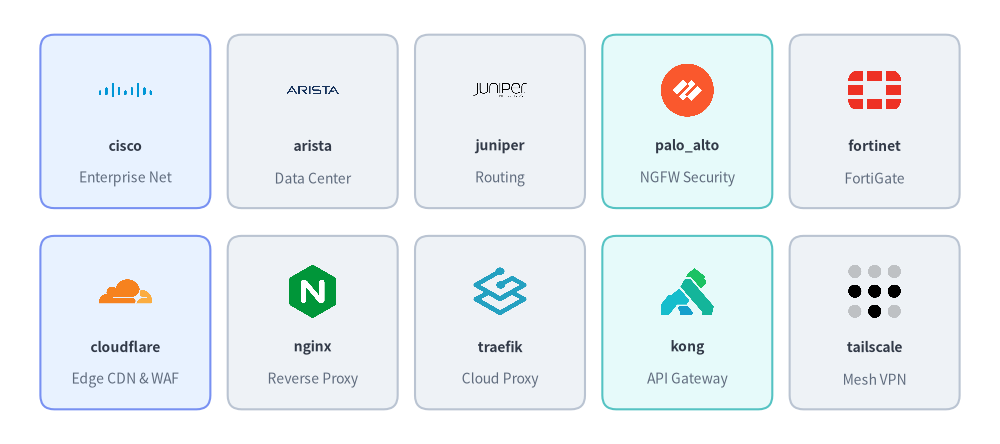

Network & Cisco Topology Icons
Drawlib provides 70 official networking & Cisco topology icons in drawlib.icons.network (NetworkIcon) and 70 matching 2D pastel icons in drawlib.icons.original_network (OriginalNetworkIcon). Both suites include 48 networking vendor/project logos and 22 L2/L3 network topology icons (cisco_* in network with "classic" and "modern" variants, paired with 22 vendor-neutral topology icons in original_network) for standalone diagrams or Architecture Diagrams (see Icons Overview).
Source Code
from drawlib.canvas import save, setup
from drawlib.icons import network, original_network
from drawlib.shapes import rectangle
from drawlib.styles import Styles
from drawlib.text import text
setup(width=146, height=64)
columns = [
("Cloudflare", network.cloudflare, original_network.cloudflare),
("NGINX Proxy", network.nginx, original_network.nginx),
("Palo Alto", network.palo_alto, original_network.palo_alto),
("Core Router", network.cisco_core_router, original_network.core_router),
("L3 Switch", network.cisco_l3_switch, original_network.l3_switch),
]
rows = [
(40.0, "Official / Cisco", "drawlib.icons.network", Styles.Neutral),
(16.0, "2D Pastel Suite", "original_network", Styles.PrimaryNeutral),
]
for col_idx, (col_title, _, _) in enumerate(columns):
cx = 46.5 + col_idx * 22.0
text((cx, 56.5), col_title, style=Styles.DarkBold.patch(text_size=10.5))
for row_idx, (cy, row_title, row_sub, card_st) in enumerate(rows):
rectangle((19.0, cy), width=28.0, height=21.0, style=card_st.patch(shape_r=2))
text((19.0, cy + 3.0), row_title, style=Styles.DarkBold.patch(text_size=10.0))
text((19.0, cy - 3.0), row_sub, style=Styles.Muted.patch(text_size=10.0))
for col_idx, (lbl, fn_off, fn_orig) in enumerate(columns):
cx = 46.5 + col_idx * 22.0
cell_st = Styles.SecondaryNeutral if (row_idx == 1 and col_idx >= 3) else card_st
rectangle((cx, cy), width=19.5, height=21.0, style=cell_st.patch(shape_r=2))
fn = fn_off if row_idx == 0 else fn_orig
fn((cx, cy + 3.0), width=8.5, style=Styles.Primary)
text((cx, cy - 6.0), lbl, style=Styles.DarkBold.patch(text_size=10.0))
save()
1. API Signature, Twin Module Structure & Cisco variant Options
All 48 networking brand icons share identical names across drawlib.icons.network and drawlib.icons.original_network. In addition, the 22 cisco_* topology functions in drawlib.icons.network accept variant="default" | "classic" | "modern":
from drawlib.diagrams.architecture import NetworkIcon, Node, OriginalNetworkIcon
from drawlib.icons import network, original_network
from drawlib.styles import Styles
# 1. Networking brand icons (identical function names in both suites)
network.cloudflare((25, 25), width=10.0, style=Styles.Primary)
original_network.cloudflare((55, 25), width=10.0, style=Styles.Primary)
# 2. Cisco topology icons support variant="default" ("classic") or variant="modern"
network.cisco_core_router((85, 25), width=10.0, style=Styles.Primary, variant="classic")
network.cisco_core_router((115, 25), width=10.0, style=Styles.Primary, variant="modern")
# 3. Vendor-neutral 2D pastel topology twin in original_network
original_network.core_router((145, 25), width=10.0, style=Styles.Primary)
# 4. High-level ArchitectureDiagram Node integration via Enum
fw_node = Node("Perimeter FW", icon=NetworkIcon.CISCO_FIREWALL, icon_size=8.0)
sw_node = Node("Core Switch", icon=OriginalNetworkIcon.CORE_SWITCH, icon_size=8.0)
| Feature | Official & Cisco Suite (network) |
Original 2D Pastel Suite (original_network) |
|---|---|---|
| Module Import | from drawlib.icons import network |
from drawlib.icons import original_network |
| Brand Function Signature | network.<brand>(xy, width, *, style, variant="default") |
original_network.<brand>(xy, width, *, style, variant="default") |
| Topology Function Signature | network.cisco_<role>(xy, width, *, style, variant="default" | "classic" | "modern") |
original_network.<role>(xy, width, *, style, variant="default") |
| Architecture Enum | NetworkIcon.<NAME> |
OriginalNetworkIcon.<NAME> |
| Canonical Count | 70 (48 vendor/OSS brands + 22 cisco_* topology icons) |
70 (48 2D pastel brand twins + 22 topology icons) |
2. Networking Vendor, CDN, Proxy & VPN Brand Icons (48 Icons)
The 48 brand icons cover enterprise switching/routing hardware, next-generation firewalls (NGFW), Zero-Trust mesh VPNs, CDNs, reverse proxies, API gateways, and DNS authorities:

Source Code
from drawlib.canvas import save, setup
from drawlib.icons import network
from drawlib.shapes import rectangle
from drawlib.styles import Styles
from drawlib.text import text
setup(width=144, height=64)
row1 = [
("cisco", "Enterprise Net", network.cisco, Styles.PrimaryNeutral),
("arista", "Data Center", network.arista, Styles.Neutral),
("juniper", "Routing", network.juniper, Styles.Neutral),
("palo_alto", "NGFW Security", network.palo_alto, Styles.SecondaryNeutral),
("fortinet", "FortiGate", network.fortinet, Styles.Neutral),
]
row2 = [
("cloudflare", "Edge CDN & WAF", network.cloudflare, Styles.PrimaryNeutral),
("nginx", "Reverse Proxy", network.nginx, Styles.Neutral),
("traefik", "Cloud Proxy", network.traefik, Styles.Neutral),
("kong", "API Gateway", network.kong, Styles.SecondaryNeutral),
("tailscale", "Mesh VPN", network.tailscale, Styles.Neutral),
]
for row_idx, items in enumerate([row1, row2]):
cy = 46.5 if row_idx == 0 else 17.5
for col_idx, (title, cat, icon_fn, card_st) in enumerate(items):
cx = 18.0 + col_idx * 27.0
rectangle((cx, cy), width=24.5, height=25.0, style=card_st.patch(shape_r=2))
icon_fn((cx, cy + 4.5), width=8.5, style=Styles.Primary)
text((cx, cy - 3.5), title, style=Styles.DarkBold.patch(text_size=10.0))
text((cx, cy - 8.2), cat, style=Styles.Muted.patch(text_size=10.0))
save()
2.1. Complete Networking Brand Icons Reference (48 Canonical Names)
All 48 canonical brand names below are available in both network.<name> (NetworkIcon.<NAME>) and original_network.<name> (OriginalNetworkIcon.<NAME>):
| Category | Count | Canonical Icon Names (network.* & original_network.*) |
|---|---|---|
| Enterprise & Campus Network Hardware Vendors | 15 | arista, aruba, asus, cisco, d_link, frrouting, juniper, linksys, meraki, mikrotik, netgear, openwrt, tp_link, ubiquiti, yamaha |
| Next-Gen Firewalls (NGFW), Zero-Trust VPN & SASE | 11 | checkpoint, fortinet, netbird, opnsense, openvpn, palo_alto, pfsense, tailscale, wireguard, zerotier, zscaler |
| CDNs, Load Balancers, Reverse Proxies & API Gateways | 12 | akamai, apisix, caddy, cloudflare, f5, fastly, haproxy, kong, nginx, squid, traefik, varnish |
| DNS Servers, Ad-Blockers, TLS CAs & Domain Registrars | 10 | adguard, bind, digicert, godaddy, lets_encrypt, namecheap, pi_hole, porkbun, powerdns, unbound |
3. Cisco Topology Variants (classic vs. modern) & 2D Pastel Twins (22 Icons)
For standard L2/L3 network topology symbols (routers, switches, firewalls, wireless controllers, and optical transport), Drawlib provides three visual styles:
network.cisco_<role>(..., variant="classic")(orvariant="default"): Classic 3D isometric Cisco teal/blue topology pucks.network.cisco_<role>(..., variant="modern"): Flat modern Cisco circular/square blue topology badges.original_network.<role>(...): Vendor-neutral 2D pastel topology icons authored in Drawlib's flat aesthetic.
from drawlib.canvas import save, setup
from drawlib.icons import network, original_network
from drawlib.shapes import rectangle
from drawlib.styles import Styles
from drawlib.text import text
setup(width=148, height=82)
columns = [
("Core Router", network.cisco_core_router, original_network.core_router),
("L3 Switch", network.cisco_l3_switch, original_network.l3_switch),
("Firewall", network.cisco_firewall, original_network.firewall),
("Load Balancer", network.cisco_load_balancer, original_network.load_balancer),
("Wireless AP", network.cisco_wireless_ap, original_network.wireless_ap),
]
rows = [
(59.0, 'variant="classic"', "network.cisco_* (default)", Styles.Neutral),
(36.5, 'variant="modern"', "network.cisco_*", Styles.PrimaryNeutral),
(14.0, "2D Pastel Twin", "original_network.*", Styles.SecondaryNeutral),
]
for col_idx, (col_title, _, _) in enumerate(columns):
cx = 48.0 + col_idx * 21.8
text((cx, 74.5), col_title, style=Styles.DarkBold.patch(text_size=10.5))
for row_idx, (cy, row_title, row_sub, card_st) in enumerate(rows):
rectangle((20.0, cy), width=30.0, height=19.5, style=card_st.patch(shape_r=2))
text((20.0, cy + 2.8), row_title, style=Styles.DarkBold.patch(text_size=10.0))
text((20.0, cy - 3.2), row_sub, style=Styles.Muted.patch(text_size=10.0))
for col_idx, (_, fn_cisco, fn_orig) in enumerate(columns):
cx = 48.0 + col_idx * 21.8
rectangle((cx, cy), width=19.5, height=19.5, style=card_st.patch(shape_r=2))
if row_idx == 0:
fn_cisco((cx, cy), width=9.0, style=Styles.Primary, variant="classic")
elif row_idx == 1:
fn_cisco((cx, cy), width=9.0, style=Styles.Primary, variant="modern")
else:
fn_orig((cx, cy), width=9.0, style=Styles.Primary)
save()
3.1. Complete 22 Network Topology Icons Reference (network.cisco_* & original_network.*)
network.cisco_* Function (classic / modern) |
NetworkIcon Enum |
original_network.* 2D Pastel Twin |
OriginalNetworkIcon Enum |
Network Topology Role |
|---|---|---|---|---|
cisco_client_pc |
CISCO_CLIENT_PC |
client_pc |
CLIENT_PC |
End-user workstation or desktop client host |
cisco_core_router |
CISCO_CORE_ROUTER |
core_router |
CORE_ROUTER |
High-capacity backbone / core MPLS/BGP router |
cisco_core_switch |
CISCO_CORE_SWITCH |
core_switch |
CORE_SWITCH |
Campus or distribution core chassis switch |
cisco_firewall |
CISCO_FIREWALL |
firewall |
FIREWALL |
Perimeter L3/L4/L7 stateful security appliance |
cisco_ids_ips |
CISCO_IDS_IPS |
ids_ips |
IDS_IPS |
Intrusion detection and prevention sensor |
cisco_ip_phone |
CISCO_IP_PHONE |
ip_phone |
IP_PHONE |
VoIP desk telephone endpoint |
cisco_ise |
CISCO_ISE |
nac_server |
NAC_SERVER |
Network Access Control (NAC) / Cisco ISE policy server |
cisco_l2_switch |
CISCO_L2_SWITCH |
l2_switch |
L2_SWITCH |
Access-layer Ethernet VLAN switch |
cisco_l3_switch |
CISCO_L3_SWITCH |
l3_switch |
L3_SWITCH |
Multilayer inter-VLAN routing switch |
cisco_load_balancer |
CISCO_LOAD_BALANCER |
load_balancer |
LOAD_BALANCER |
Server load balancer / ADC appliance |
cisco_nexus_switch |
CISCO_NEXUS_SWITCH |
datacenter_switch |
DATACENTER_SWITCH |
Leaf-spine data center fabric switch (Cisco Nexus) |
cisco_optical_transport |
CISCO_OPTICAL_TRANSPORT |
optical_transport |
OPTICAL_TRANSPORT |
DWDM / fiber-optic metro transport node |
cisco_router |
CISCO_ROUTER |
router |
ROUTER |
Standard branch or edge IP router |
cisco_server |
CISCO_SERVER |
server |
SERVER |
Rack or tower application server host |
cisco_voice_gateway |
CISCO_VOICE_GATEWAY |
voice_gateway |
VOICE_GATEWAY |
SIP / PSTN unified communications voice gateway |
cisco_vpn_gateway |
CISCO_VPN_GATEWAY |
vpn_gateway |
VPN_GATEWAY |
Site-to-site IPsec / SSL VPN concentrator |
cisco_wan_cloud |
CISCO_WAN_CLOUD |
wan_cloud |
WAN_CLOUD |
Public Internet, MPLS carrier cloud, or ISP transit |
cisco_wan_router |
CISCO_WAN_ROUTER |
wan_router |
WAN_ROUTER |
SD-WAN / wide-area edge router |
cisco_web_security |
CISCO_WEB_SECURITY |
web_security |
WEB_SECURITY |
Secure web gateway (SWG) & URL filtering proxy |
cisco_wireless_ap |
CISCO_WIRELESS_AP |
wireless_ap |
WIRELESS_AP |
Wi-Fi wireless access point (AP) |
cisco_wireless_controller |
CISCO_WIRELESS_CONTROLLER |
wireless_controller |
WIRELESS_CONTROLLER |
Centralized WLAN controller (WLC) |
cisco_wireless_router |
CISCO_WIRELESS_ROUTER |
wireless_router |
WIRELESS_ROUTER |
SOHO integrated Wi-Fi gateway router |
4. Practical Architecture Diagram (NetworkIcon & OriginalNetworkIcon)
The following ArchitectureDiagram models an enterprise campus and data center perimeter network using NetworkIcon:
from drawlib.canvas import save, setup
from drawlib.diagrams.architecture import ArchitectureDiagram, NetworkIcon, Node, NodeGroup
from drawlib.styles import Styles
setup(width=150, height=68)
d = ArchitectureDiagram(
node_style=Styles.Primary,
node_text_style=Styles.DarkBold.patch(text_size=10.0),
edge_style=Styles.DarkBold,
edge_text_style=Styles.DarkBold.patch(text_size=10.0),
node_card_style=Styles.Neutral,
title="Enterprise Perimeter & Campus Network Topology (NetworkIcon)",
)
wan = d.add(
Node(
"Cloudflare\nAnycast Edge",
width=22,
height=18,
icon=NetworkIcon.CLOUDFLARE,
icon_size=7.5,
card_style=Styles.PrimaryNeutral,
),
xy=(13.0, 23.0),
)
dc = d.add(NodeGroup(title="Corporate DMZ & Core Network", padding=4.5), xy=(36.0, 4.0))
fw = dc.add(
Node(
"Cisco Firewall\n(ASA / Firepower)",
width=25,
height=18,
icon=NetworkIcon.CISCO_FIREWALL,
icon_size=7.5,
card_style=Styles.SecondaryNeutral,
),
xy=(15.5, 19.0),
)
core_sw = dc.add(
Node(
"Cisco L3 Core\nSwitch",
width=24,
height=18,
icon=NetworkIcon.CISCO_L3_SWITCH,
icon_size=7.5,
card_style=Styles.PrimaryNeutral,
),
xy=(52.0, 19.0),
)
lb = dc.add(
Node(
"NGINX Reverse\nProxy Cluster",
width=24,
height=17,
icon=NetworkIcon.NGINX,
icon_size=7.2,
),
xy=(88.0, 29.0),
)
wifi = dc.add(
Node(
"Campus Wi-Fi\nAccess Point",
width=24,
height=17,
icon=NetworkIcon.CISCO_WIRELESS_AP,
icon_size=7.2,
),
xy=(88.0, 9.0),
)
d.connect(wan, fw, label="BGP", padding=1.5)
d.connect(fw, core_sw, padding=1.5)
d.connect(core_sw, lb, padding=1.5)
d.connect(core_sw, wifi, padding=1.5)
d.draw(xy=(4.0, 4.0))
save()
[!TIP] For bare-metal servers, hypervisors, and Linux/Windows operating systems, see Server, OS & Virtualization Icons. For IAM, SIEM, and endpoint security icons, see Security & Zero-Trust Icons.